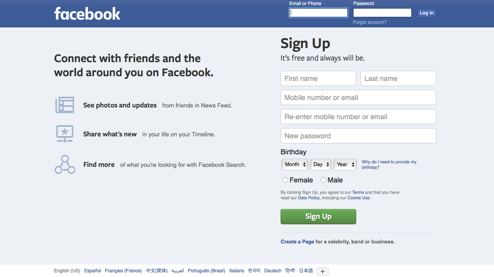
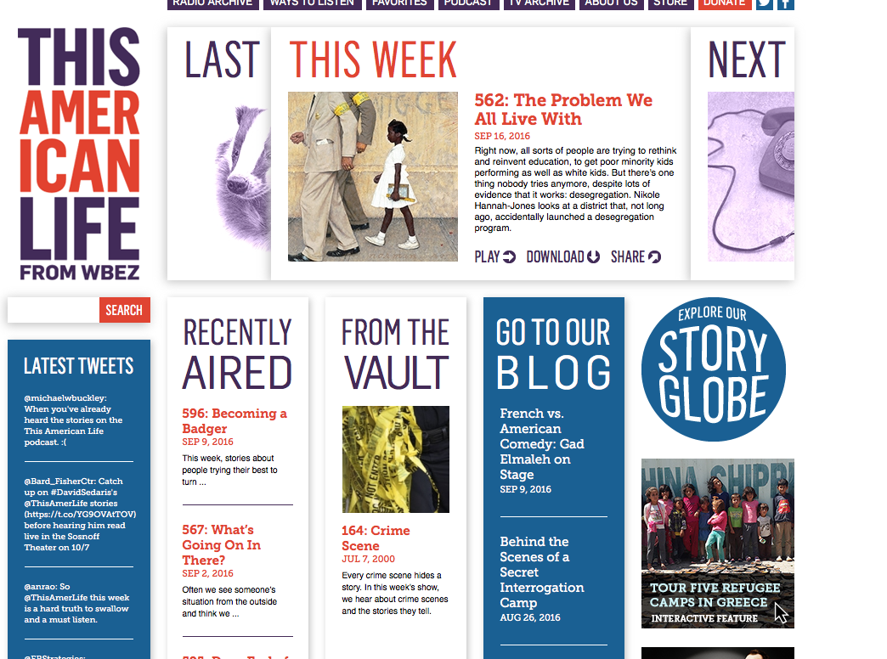
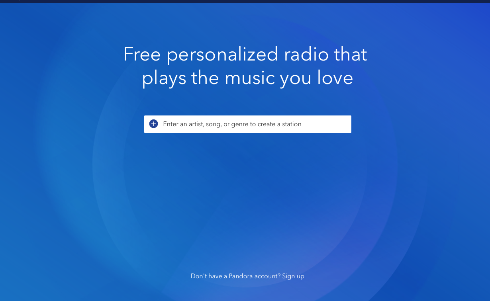

I am a huge fan of This American Life. I love to listen to their podcasts while I'm doing homework, cooking, or riding on the bus or train. I just go to their archive page and listen to different broadcasts from 1995 to 2016.
I love to listen to Pandora while I'm doing homework (If I get tired of This American Life).
Facebook is a website I frequently visit but feel a bit strange about. It always creeped me out a bit.
Moodle is another site I visit frequently. This is where I post many assignments for my liberal arts classes.
Images of websites



Why I am taking this class and what I hope to achieve through it?
II don't know very much about web design, but I think it's an extremely useful (and marketable) skill to have as a Graphic Designer. I hope to become skilled in web design and learn to use html and css